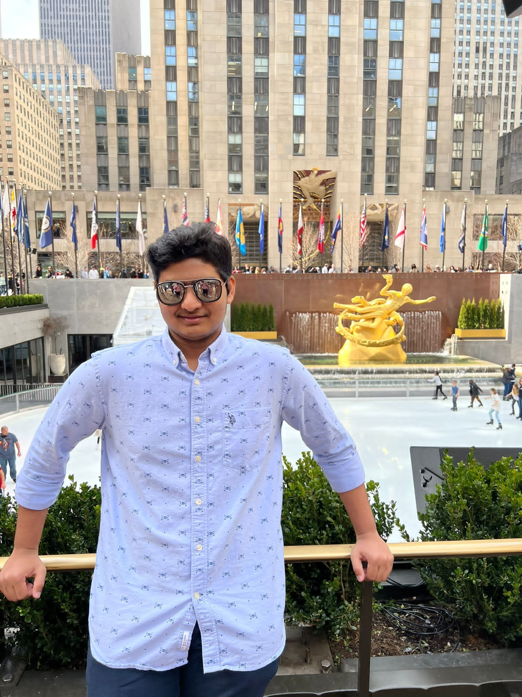
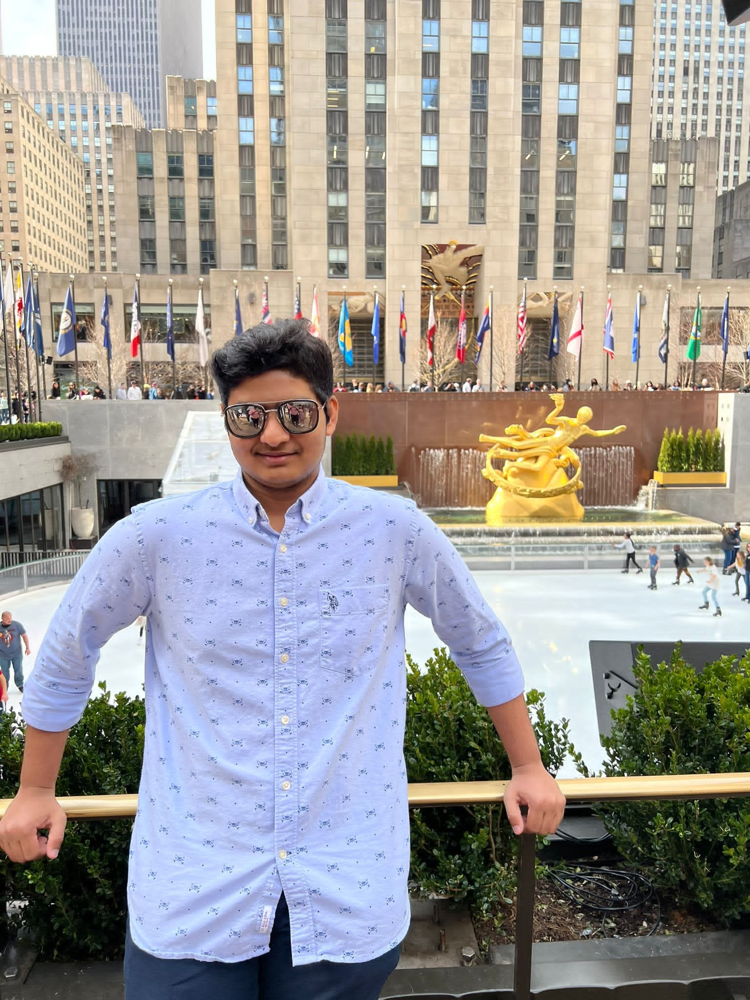
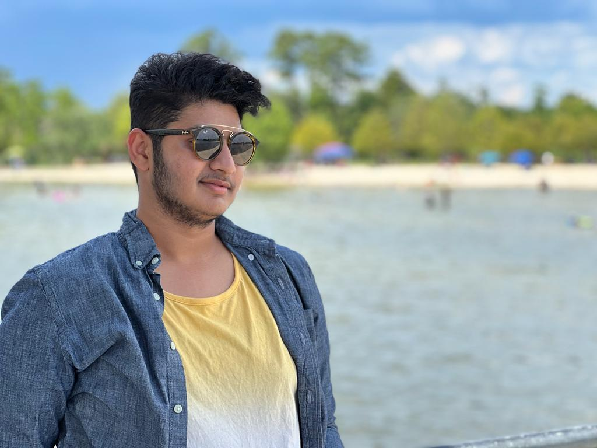
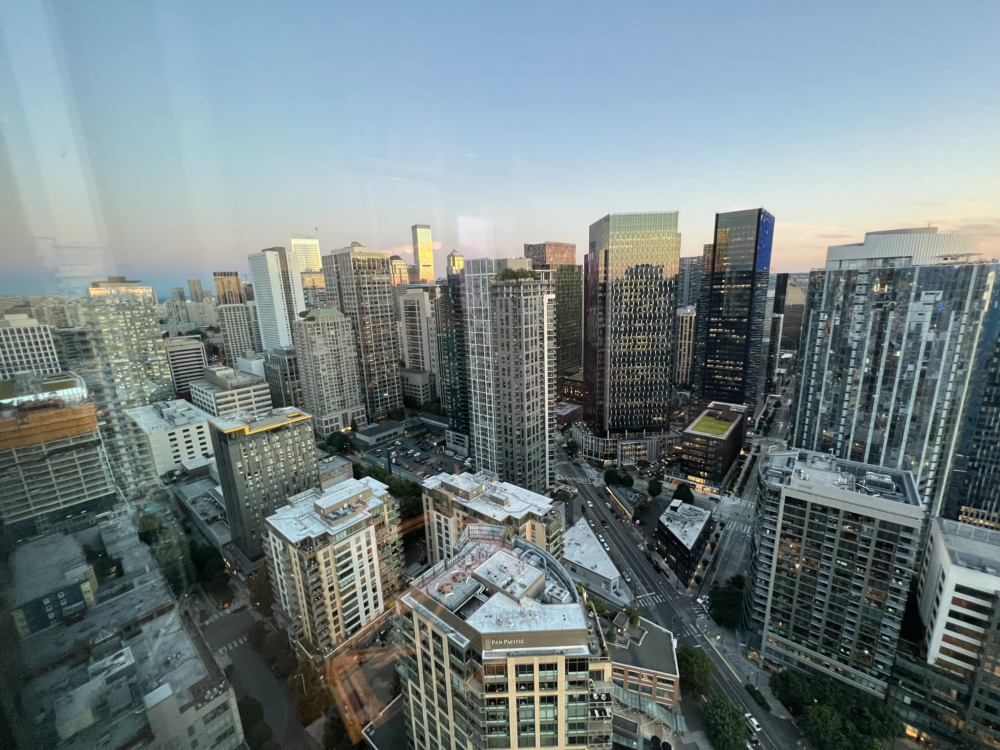

New York Trip

In the spring of 2022, I went to New York with some friends. In New York, I had the good fortune to spend a lot of memorable time with my friends.
I have a compassion of travel and exlore new places. It gives exposure to various un problems and perks of other lifestyles helps me to see their world in a different way. Travel gives me confidence of servival in different typical situations, social networking. It gives me better academic performance, perspective, individuality and growth & independence.
New York Trip

In the spring of 2022, I went to New York with some friends. In New York, I had the good fortune to spend a lot of memorable time with my friends.
New Orleans - Fontainebleau Beach Trip

I traveled to New Orleans, Louisiana, in the summer of 2022. I was in town for the Fourth of July, and I saw fireworks explode in the sky. I've taken a cruise ship. The cruise lasted about 40 minutes and included dinner. I've also been to the Fontainebleau Beach Resort, which was wonderful.
Seattle Washington Trip

My parents took me to Seattle for a holiday vacation when I was in grade ten. I visited the Discovery Park Loop, which featured a lovely pop-up sky restaurant where they would transport a group of people into the sky and serve food. I've also seen the must-see Space Needle in Seattle. It was a fantastic childhood memory of mine.